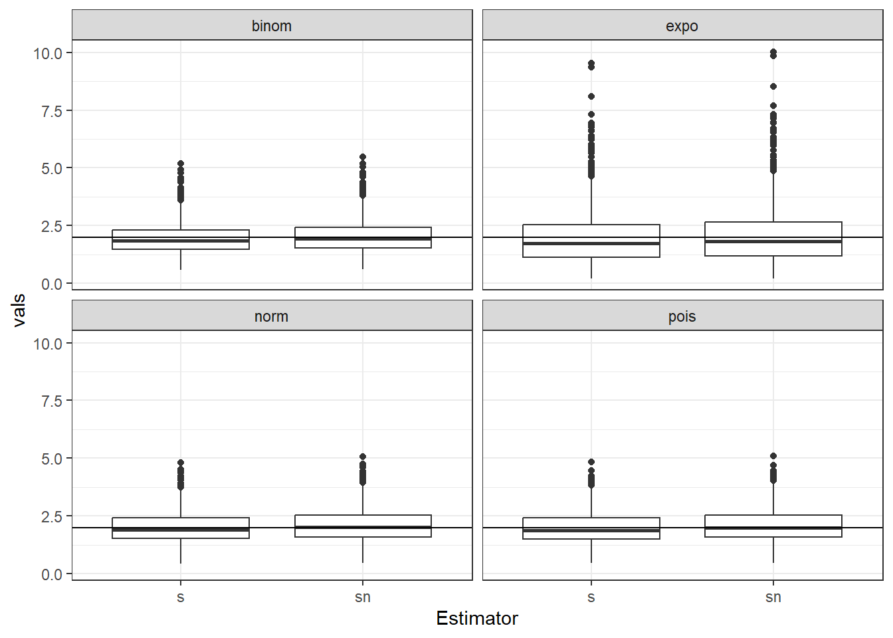
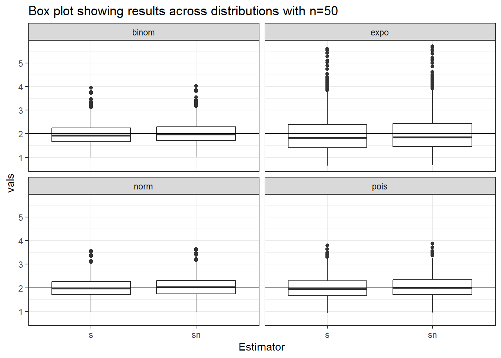
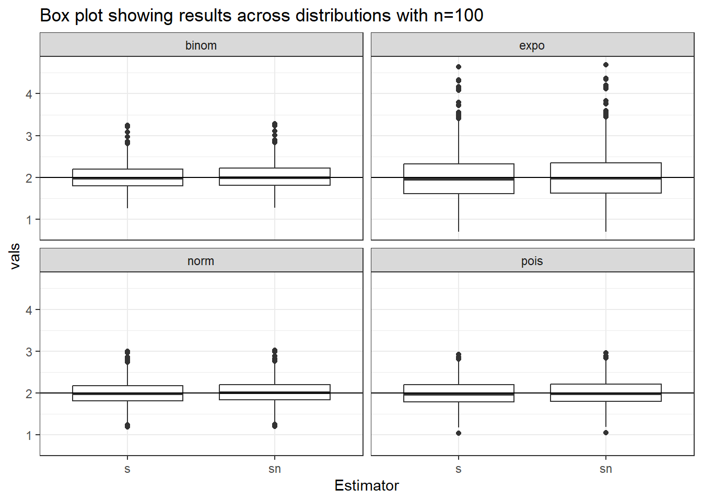
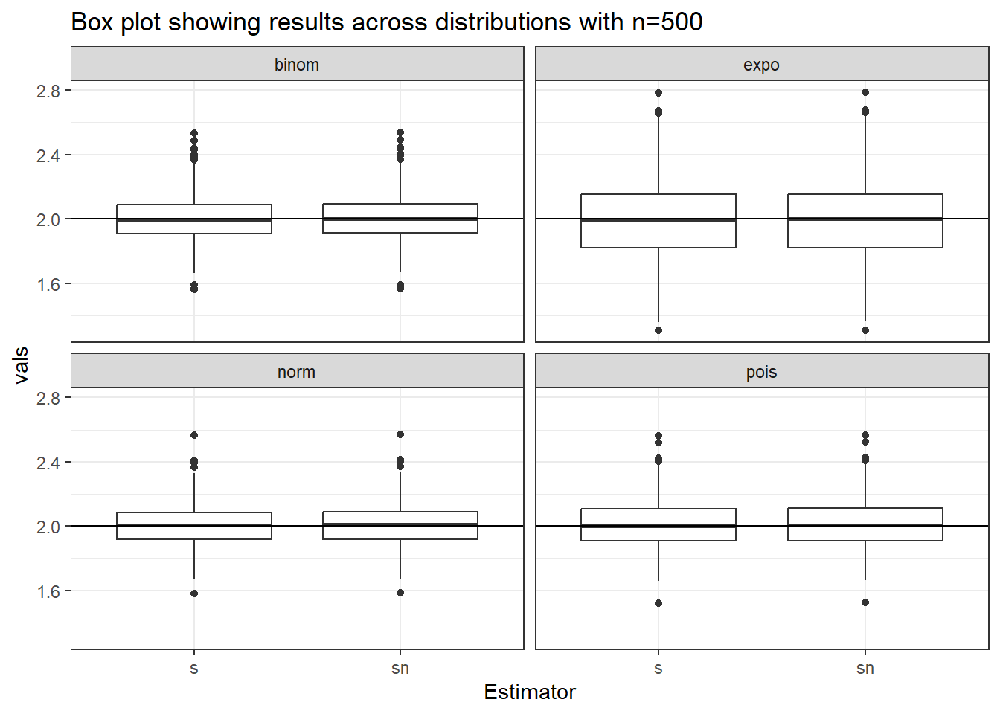
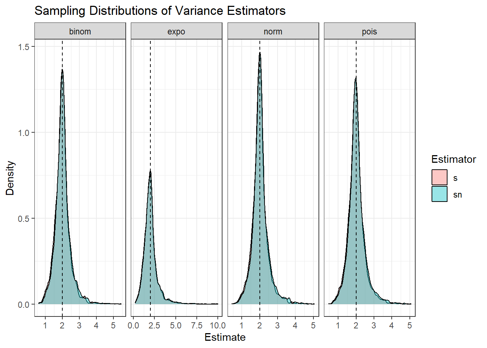

Complete the tasks below. Make sure to start your solutions in on a new line that starts with “Solution:”.
Make sure to use the Quarto Cheatsheet. This will make completing and writing up the lab much easier.
Make sure to use “enter” to make your code readable, so it doesn’t run off the page. I switched the Quarto document to automatically render to .pdf, so you can see what you’re submitting by default. You can switch back for the highlighting by moving the html block above the pdf block in the YAML header.
Don’t forget that you can copy-and-paste code when you’re doing something similar as we did in class!
Make sure to plot all computed probabilities. This is good ggplot practice AND will help make sure you don’t make a mistake when computing the probability.
1 Introduction
When performing point estimation, there isn’t just one right answer. For example, the Method of Moments (MOM) and Maximum Likelihood Estimates (MLEs) aren’t always the same.
One question that comes up, is why we calculate the sample variance as \[S_{n-1}^2 = \frac{1}{n-1} \sum_{i=1}^n (X_i -\bar{X})^2,\] when it is supposed to be the ``average squared distance from the mean, i.e., \[S_n^2 = \frac{1}{n} \sum_{i=1}^n (X_i -\bar{X})^2.\]
2 Comparing Estimators
2.1 Initial Simulation
In this lab, we will explore why we use \(S_{n-1}^2\) and not \(S_n^2\). To do this, we will generate data from four known distributions:
Remark: Note that I have selected the parameters so that the true variance for all four models is 2.
For each distribution, write a loop that completes the following 1000 times. Put set.seed(7272) at the top of your code chunk.
Generate a sample of size \(n\) from the distribution.
Calculate and save \(S_{n-1}^2\) and \(S_n^2.\)
Start with \(n=20\). Is there evidence that \(S_{n-1}^2\) is a better estimator than \(S_n^2\)?
Solution:
Created a function to compare estimatores and used a for loop to compute variance with n and n-1, storing the values in their repective varaibles. Put the data in a tibble, reshaped with pivot_longer() and seperated the variables into estimator and distribution for easier plotting and comparisons.
Code
set.seed(7272)s_norm<-rep(NA, 1000)sn_norm<-rep(NA, 1000)s_binom<-rep(NA, 1000)sn_binom<-rep(NA, 1000)s_expo<-rep(NA, 1000)sn_expo<-rep(NA, 1000)s_pois<-rep(NA, 1000)sn_pois<-rep(NA, 1000)n<-1000# function to compare estimators across different distribtuionsestimator.comparison<-function(num){for(i in1:n){ ##loop through 1000 samples# normal distrib rand.norm<-rnorm(n=num, mean=0, sd=sqrt(2)) s_norm[i]<-var(rand.norm) sn_norm[i]<- (num/(num-1))*var(rand.norm)# poisson distrib rand.pois<-rpois(n=num, lambda=2) s_pois[i]<-var(rand.pois) sn_pois[i]<-(num/(num-1))*var(rand.pois)# exp distrib rand.expo<-rexp(n=num, rate=1/sqrt(2)) s_expo[i]<-var(rand.expo) sn_expo[i]<-(num/(num-1))*var(rand.expo)# binom distrib rand.binom<-rbinom(n=num, size=50, prob=(5-sqrt(21))/10) s_binom[i]<-var(rand.binom) sn_binom[i]<- (num/(num-1))*var(rand.binom) }## cretaed a tibble with all the sn and s(n-1) for each distribution dat <-tibble(s_binom=s_binom,sn_binom=sn_binom,s_expo=s_expo,sn_expo=sn_expo,s_norm=s_norm,sn_norm=sn_norm,s_pois=s_pois,sn_pois=sn_pois )# reshape with pivot_longer and seperated into estimator and distribution res.long<- dat |>pivot_longer(cols=everything(),names_to="variance",values_to="vals" ) |>separate(variance, into=c("Estimator","Distribution"), sep="_")return(res.long)}res<-estimator.comparison(20)(res)
# A tibble: 8,000 × 3
Estimator Distribution vals
<chr> <chr> <dbl>
1 s binom 2.85
2 sn binom 3.00
3 s expo 3.61
4 sn expo 3.80
5 s norm 2.00
6 sn norm 2.10
7 s pois 3.06
8 sn pois 3.22
9 s binom 1.19
10 sn binom 1.25
# ℹ 7,990 more rows
Create a plot or combination of plots (using patchwork) to show the results across all four distributions. Make sure to create a corresponding table that numerically summarizes the results of the simulation. You should include \[\begin{align*}
\textrm{Bias} &= \textrm{Average of Estimates} - \textrm{True Value}\\
\textrm{Precision} &= \frac{1}{\textrm{Variance of Estimates}}\\
\textrm{Mean Square Error} &= \textrm{Bias}^2 + \textrm{Variance of Estimates}.
\end{align*}\]
Solution:
Created a box plot to visualise and compare the variance(n) and variance(n-1) across all the distributions. Created a numerical summary of the results showing mean, variance, bias, precision and MSE.
Code
# size: scriptsize# box plot to visualise results across all distributionsres.plot<-ggplot(res)+geom_boxplot(aes(x=Estimator, y=vals)) +geom_hline(yintercept=2) +facet_wrap(~Distribution) +theme_bw()(res.plot)

Code
## numerical summary with mean , bias, variance, precision, MSEres.summary.table<- res |>group_by(Distribution, Estimator) |>summarise(Mean=mean(vals),Variance=var(vals),Bias=mean(vals)-2,Precision=1/var(vals),MSE=Bias^2+ Variance )(res.summary.table)
Table 1: Summary of Variance Estimators
# A tibble: 8 × 7
# Groups: Distribution [4]
Distribution Estimator Mean Variance Bias Precision MSE
<chr> <chr> <dbl> <dbl> <dbl> <dbl> <dbl>
1 binom s 1.93 0.455 -0.0743 2.20 0.460
2 binom sn 2.03 0.504 0.0271 1.98 0.505
3 expo s 2.01 1.57 0.00740 0.638 1.57
4 expo sn 2.11 1.74 0.113 0.576 1.75
5 norm s 2.01 0.485 0.0102 2.06 0.485
6 norm sn 2.12 0.537 0.116 1.86 0.551
7 pois s 1.99 0.490 -0.00930 2.04 0.490
8 pois sn 2.10 0.543 0.0955 1.84 0.552
2.2 Simulation over various sample sizes
Consider the effect of the sample size have on these results. Provide a graphical and numerical summary of what happens as \(n\) increases – say \(n=20\), \(n=50\), \(n=100\), and \(n=500\). Does the result in your initial simulation hold across samples? Or, do things change as the sample size changes? Ensure to set your randomization seed.
Solution
Repeated excercise in section 2.1 across different n values and plotted boxplots to visualise each
Code
res50<-estimator.comparison(50)res100<-estimator.comparison(100)res500<-estimator.comparison(500)# box plot to visualise results across all distributionsres50.plot<-ggplot(res50)+geom_boxplot(aes(x=Estimator, y=vals)) +geom_hline(yintercept=2) +facet_wrap(~Distribution) +labs(title ="Box plot showing results across distributions with n=50") +theme_bw()(res50.plot)

Code
## numerical summary with mean , bias, variance, precision, MSEres50.summary<- res50 |>group_by(Distribution, Estimator) |>summarise(Mean=mean(vals),Variance=var(vals),Bias=mean(vals)-2,Precision=1/var(vals),MSE=Bias^2+ Variance )(res50.summary)
# A tibble: 8 × 7
# Groups: Distribution [4]
Distribution Estimator Mean Variance Bias Precision MSE
<chr> <chr> <dbl> <dbl> <dbl> <dbl> <dbl>
1 binom s 1.99 0.192 -0.0103 5.22 0.192
2 binom sn 2.03 0.199 0.0303 5.01 0.200
3 expo s 1.99 0.615 -0.0147 1.62 0.616
4 expo sn 2.03 0.641 0.0258 1.56 0.642
5 norm s 2.00 0.167 -0.000989 5.97 0.167
6 norm sn 2.04 0.174 0.0398 5.74 0.176
7 pois s 2.00 0.200 0.00442 5.00 0.200
8 pois sn 2.05 0.208 0.0453 4.80 0.210
Code
# box plot to visualise results across all distributionsres100.plot<-ggplot(res100)+geom_boxplot(aes(x=Estimator, y=vals)) +geom_hline(yintercept=2) +facet_wrap(~Distribution) +labs(title ="Box plot showing results across distributions with n=100") +theme_bw()(res100.plot)

Code
## numerical summary with mean , bias, variance, precision, MSEres100.summary<- res100 |>group_by(Distribution, Estimator) |>summarise(Mean=mean(vals),Variance=var(vals),Bias=mean(vals)-2,Precision=1/var(vals),MSE=Bias^2+ Variance )(res100.summary)
# A tibble: 8 × 7
# Groups: Distribution [4]
Distribution Estimator Mean Variance Bias Precision MSE
<chr> <chr> <dbl> <dbl> <dbl> <dbl> <dbl>
1 binom s 2.01 0.0941 0.00599 10.6 0.0941
2 binom sn 2.03 0.0960 0.0262 10.4 0.0967
3 expo s 2.02 0.328 0.0203 3.05 0.328
4 expo sn 2.04 0.334 0.0407 2.99 0.336
5 norm s 2.00 0.0800 0.00470 12.5 0.0800
6 norm sn 2.02 0.0816 0.0250 12.2 0.0823
7 pois s 1.99 0.0887 -0.0112 11.3 0.0888
8 pois sn 2.01 0.0905 0.00884 11.0 0.0906
Code
# box plot to visualise results across all distributionsres500.plot<-ggplot(res500)+geom_boxplot(aes(x=Estimator, y=vals)) +geom_hline(yintercept=2) +facet_wrap(~Distribution) +labs(title ="Box plot showing results across distributions with n=500") +theme_bw()(res500.plot)

Code
## numerical summary with mean , bias, variance, precision, MSEres500.summary<- res500 |>group_by(Distribution, Estimator) |>summarise(Mean=mean(vals),Variance=var(vals),Bias=mean(vals)-2,Precision=1/var(vals),MSE=Bias^2+ Variance )(res500.summary)
# A tibble: 8 × 7
# Groups: Distribution [4]
Distribution Estimator Mean Variance Bias Precision MSE
<chr> <chr> <dbl> <dbl> <dbl> <dbl> <dbl>
1 binom s 2.00 0.0191 0.000108 52.3 0.0191
2 binom sn 2.00 0.0192 0.00412 52.1 0.0192
3 expo s 1.99 0.0585 -0.00775 17.1 0.0585
4 expo sn 2.00 0.0587 -0.00375 17.0 0.0587
5 norm s 2.00 0.0173 0.00376 57.8 0.0173
6 norm sn 2.01 0.0174 0.00778 57.5 0.0174
7 pois s 2.01 0.0207 0.00717 48.4 0.0207
8 pois sn 2.01 0.0208 0.0112 48.2 0.0209
2.3 Simulation
You have written code to draw a random sample of various sizes from each distribution, and to calculate and store the calculated estimates. Rework your code to produce a density plot of the \(s_{n-1}^2\) and \(s_{n}^2\). Do you have a guess about their distribution? Ensure to set your randomization seed.
Solution:
Used geom_density() to visualise the desnity plot across the four distirbutions. Used patchwork to display the density graphs side by side and vertially for better comparisons. The plots look normal but a bit right-skewed for smaller sample sizes.
Code
## density plot showing how spread out the estimators are from the actual value(2)set.seed(7272)# sample size labelsres$n<-20res50$n<-50res100$n<-100res500$n<-500# combine resultsall.res<-bind_rows(res, res50, res100, res500)# make into a factor to orderall.res$n<-factor(all.res$n, levels =c(20, 50, 100, 500))# density plot with geom_densityres.density.plot<-ggplot(all.res) +geom_density(aes(x = vals, fill = Estimator), alpha =0.4) +geom_vline(xintercept =2, linetype ="dashed") +facet_grid(~ Distribution, scales ="free_x") +labs(title ="Sampling Distributions of Variance Estimators",x ="Estimate",y ="Density" ) +theme_bw()(res.density.plot)

2.4 Bootstrap
Now, take one sample from each distribution. Instead of drawing a random sample at each iteration, sample with replacement from the one sample. Produce a density plot of the \(s_{n-1}^2\) and \(s_{n}^2\). Do we get roughly the same information as we do in the full simulation? Try this over several seeds – what do you notice? Ensure to set your randomization seed.
Solution
Took a sample from each distribution and sampled with replacedment x times using a for-loop. Stored results in a tibble and reshaped using pivot_longer() then plotted a density plot using geom_density() to visualise the results.
Summarize the work you’ve done here to provide a brief (200-300 word) summary of the simulation and the results using your work in Lab 11. Your summary should be professional, clear, and all claims should be corroborated with statistical support.
Solution
In this lab, I explored the differences between the variance estimators when using n and n-1 using simulation across four distributions (Poisson, Binomial, Normal, and Exponential), each with a true variance of 2. By repeatedly sampling and computing both estimators, I compared their bias, variability, and accuracy through their means, variances, and mean squared errors (MSE). In the numerical summary table in section 2.1, for smaller sample sizes (n=20), variance S(n-1) consistently produced estimates closer to the true variance (values around 2), while S(n) tended to underestimate it which led to higher MSE values, showing less reliable performance in small samples. The boxplots and density plots visualisations supported this, showing that estimates from S(n-1) were more centered around the true value. As the sample size increased (n=50, 100, 500) both estimators improved and converged toward the true variance, with differences becoming less and less. Density plots also showed that the sampling distributions became more concentrated and kinda normal as n increased. Bootstrap simulations produced similar patterns, reinforcing the idea that variance with n-1 is more reliable, especially when working with smaller samples. The results support using variance S(n-1) as the preferred estimator due to its lower bias and more consistency.